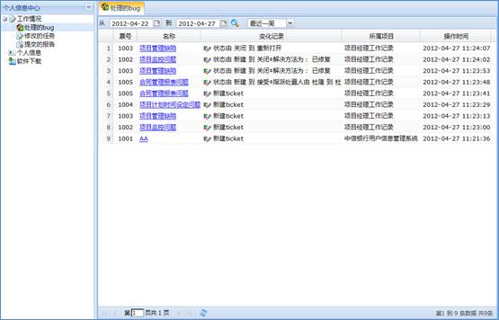
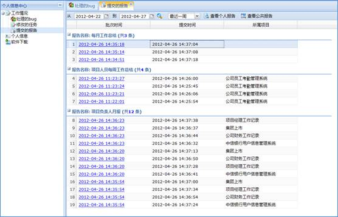
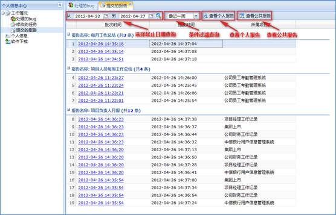
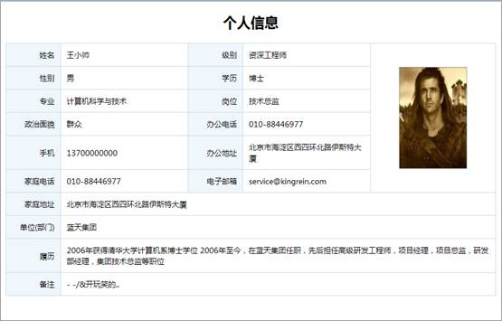
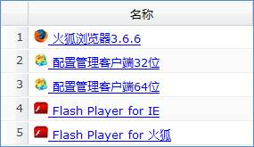

个人信息中心记录了用户个人的工作情况和用户个人信息，方便用户查看自己的工作情况，更新个人信息。个人中心同时提供了常用软件下载。点击首页侧边栏的“个人中心”链接按钮即可进入个人中心，如下图所示：

图 个人信息中心
工作情况分为处理的BUG\修改的任务\提交的报告三类。个人中心右侧会以列表的形式显示出所选类别的工作情况如下图所示：

图 工作情况分类
工作情况有两种查询方式：
1、指定时间段查询。在右侧工具栏选择希望查询的工作情况时间段起止日期，点击“搜索”按钮即可查询。
2、简单查询。点击工具栏上的下拉菜单选择“最近一周”、“最近一月”、“最近一季度”、“最近一年”或者“全部”即可查询。
查询操作页面如下图所示：

图 工作情况查询
点击“个人信息”即可查看个人信息如下图所示：

图 个人信息
点击“修改”按钮可以对部分个人信息加以修改，点击“修改密码”按钮可以修改个人登录密码，点击“修改头像”按钮可以修改个人头像。
软件下载功能提供了部分系统使用相关的软件下载，可供下载的软件列表如下图所示：

图 软件下载列表